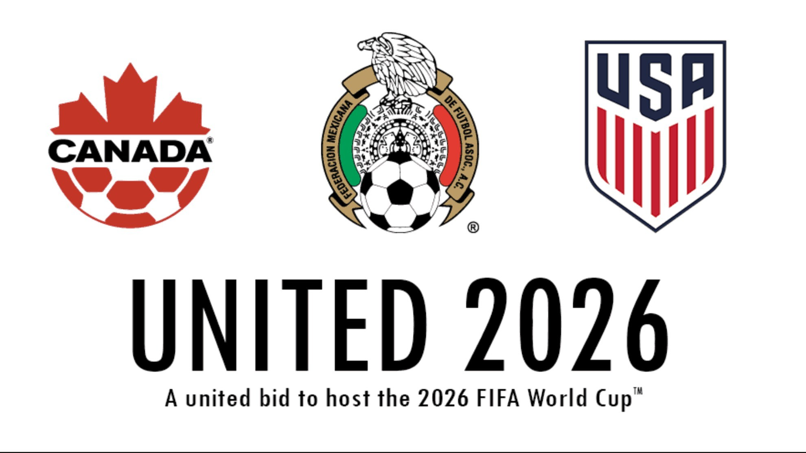

Real Madrid
El Real Madrid pierde la Liga en la última jornada tras un inesperado empate ante el Almería
Madrid, 22 de mayo de 2024 – Inesperado y desconcertante. Así se podría resumir lo que ocurrió en la última jornada de la Liga. El Real Madrid, líder indiscutible hasta hace pocas semanas y con todas las apuestas a su favor, perdió la oportunidad de alzar el título tras empatar 1-1 contra el Almería, equipo que lucha por mantenerse en la categoría.
En un abarrotado Santiago Bernabéu, la tensión era palpable. Un gol tempranero del Almería en el minuto 18 dejó en silencio a la afición madridista, que confiaba en ver a su equipo levantar el trofeo. A pesar de un dominio casi total del Madrid, con más de 20 disparos y un 70% de posesión, solo logró igualar el marcador en el minuto 75, gracias a un tanto de Vinícius Jr. Sin embargo, la defensa férrea del Almería frustró todos los intentos restantes, y el pitido final dejó al Madrid sin el título que parecía tan cercano.
La inesperada pérdida de puntos permitió al Barcelona, su rival directo, coronarse campeón tras vencer al Villarreal 2-0 en el Camp Nou. La reacción del técnico Carlo Ancelotti reflejó la decepción general del equipo: "Hicimos todo para ganar, pero el fútbol a veces es cruel".
Este resultado marca una de las temporadas más amargas para el Real Madrid, que ahora debe analizar lo que salió mal y replantearse de cara al próximo año. La afición, aún en estado de shock, espera una respuesta contundente de la directiva y refuerzos que garanticen que no se repita una desilusión como esta.
Cristiano ronaldo ficha con Al_Nassar
El mejor jugador del mundo ficha por este equipo arabe
Cristiano ronaldo esta muy feliz de estar en este equipo porque cobra una millonada
.jpg)
Cristiano Ronaldo, Alias: El bicho
Mundial 2026
Mundial 2026 se celebrarara en...
El Mundial de Fútbol 2026 se celebrará en Estados Unidos, México y Canadá, que implica distancias y desplazamientos bastantes largos

Mundial